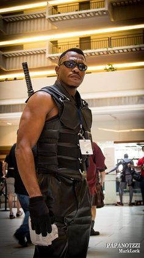

Fique Por Dentro de Tudo no Mundo Geek!
Cosplay Challenge Atrai Talentos de Todo o Mundo: O Encontro Épico dos Fãs Geek
O mundo do cosplay está prestes a testemunhar um dos eventos mais esperados do ano: o "GeekCon Cosplay Challenge". Este épico encontro de talentos reúne cosplayers de todos os cantos do globo, cada um ansioso para exibir suas habilidades de caracterização e competir pelo cobiçado título de melhor cosplayer do evento.
Com a crescente popularidade da cultura geek e dos eventos relacionados a ela, o "GeekCon Cosplay Challenge" tornou-se o ponto focal para entusiastas do cosplay, fãs de cultura pop e aficionados por entretenimento de todo o mundo. Não se trata apenas de um concurso de fantasias, mas de uma celebração da criatividade, habilidade e devoção à arte de se tornar seu personagem favorito, mesmo que apenas por um breve momento.
O evento atrai cosplayers de todos os níveis de experiência, desde novatos que estão dando seus primeiros passos no mundo do cosplay até veteranos experientes que já conquistaram inúmeros prêmios em outros eventos ao redor do mundo. O que os une é a paixão pela representação de personagens icônicos da cultura geek, sejam eles super-heróis dos quadrinhos, personagens de videogames, ícones do cinema ou figuras da literatura fantástica.
Uma das características mais emocionantes do "GeekCon Cosplay Challenge" é a diversidade de categorias em que os participantes podem competir. Desde a recriação meticulosa de trajes e adereços até performances teatrais e habilidades de maquiagem impressionantes, há uma categoria para cada aspecto do cosplay. Isso permite que os cosplayers mostrem não apenas sua habilidade técnica, mas também sua capacidade de encarnar completamente o espírito de seus personagens favoritos.
Além da competição em si, o "GeekCon Cosplay Challenge" oferece uma variedade de atividades e oportunidades para os participantes interagirem entre si e com os fãs. Workshops de criação de trajes, painéis de discussão com cosplayers renomados e sessões de fotos são apenas algumas das muitas atividades programadas para os três dias de evento. Essas oportunidades não apenas ajudam os cosplayers a aprimorar suas habilidades, mas também promovem um senso de comunidade e camaradagem entre os participantes.
No entanto, o verdadeiro destaque do "GeekCon Cosplay Challenge" é a atmosfera de celebração e inclusão que permeia todo o evento. Aqui, pessoas de todas as idades, origens e habilidades se unem para compartilhar sua paixão pela cultura geek e pela arte do cosplay. Não importa se você está vestido como um herói lendário ou um vilão infame, no "GeekCon Cosplay Challenge", todos são bem-vindos e celebrados por sua criatividade e dedicação.
À medida que a data do evento se aproxima, a expectativa e a emoção só aumentam. Os cosplayers finalizam os últimos detalhes de seus trajes, praticam suas poses e ensaiam suas performances, tudo em preparação para o momento em que pisarão no palco e terão a chance de brilhar diante de uma plateia apaixonada.
Em última análise, o "GeekCon Cosplay Challenge" não é apenas um concurso de fantasias, mas sim um testemunho da paixão e dedicação dos fãs geek em todo o mundo. É um lembrete de que, por trás de cada traje elaborado e cada performance cativante, há uma comunidade vibrante de indivíduos unidos pela sua paixão compartilhada por personagens fictícios e mundos imaginários. E quando as cortinas se abrirem e os cosplayers entrarem em cena, será mais do que apenas um desfile de fantasias - será uma celebração da criatividade humana em sua forma mais pura e emocionante.